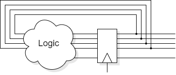

These two named styles appear in many text books — but don't get too ‘hung up’ on memorising names. Do note the potential effect of delays from the logic ‘cloud’ though.
The latter style in most cases. By registering the outputs you have a good timing reference to work from – useful when considering the design freedom of subsequent blocks. The immunity from output glitches may be a bonus.
But …
“From here [current state] I want to go there [next state] and when I'm there I'll also want these outputs.”
Thus to indicate ‘I am in state 9’ via a flip-flop delay this has to be detected in state 8.
This must also be subject to any other controls (such as an enable).
Some people prefer to separate logic and register blocks.
Instead of:
always @ (posedge clk)
if (count < 9) count <= count + 1;
else count <= 0;
always @ (posedge clk) rc <= (count == 8);
this:
always @ (count) // The ‘cloud’
begin
if (count < 9) next_count = count + 1;
else next_count = 0;
next_rc = (next_count == 9)
end
always @ (posedge clk) // The ‘rectangle’
begin // in the figure.
count <= next_count;
rc <= next_rc;
end
‘carry’ (rc) derived from register input.
You decide what suits you better.
Back to code style.
Forwards synchronous vs. asynchronous design.
Up to Tradeoffs.